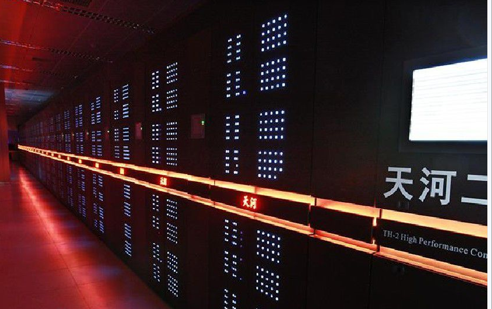
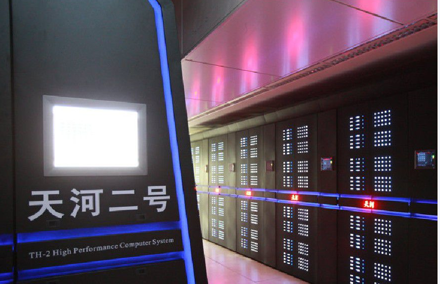

“天河二号”是由国防科学技术大学研制的超级计算机系统，以峰值计算速度每秒5.49亿亿次、持续计算速度每秒3.39亿亿次双精度浮点运算的优异性能位居榜首，成为2013年全球最快超级计算机。
2014年11月17日公布的全球超级计算机500强榜单中，中国“天河二号”以比第二名美国“泰坦”快近一倍的速度连续第四次获得冠军。
2015年5月，“天河二号”上成功进行了3万亿粒子数中微子和暗物质的宇宙学N体数值模拟，揭示了宇宙大爆炸1600万年之后至今约137亿年的漫长演化进程。同时这是迄今为止世界上粒子数最多的N体数值模拟；11月16日，全球超级计算机500强榜单在美国公布，“天河二号”超级计算机以每秒33．86千万亿次连续第六度称雄。
2016年6月20日，新一期全球超级计算机500强榜单公布，使用中国自主芯片制造的“神威·太湖之光”取代“天河二号”登上榜首。2018年11月12日，新一期全球超级计算机500强榜单在美国达拉斯发布，中国超算“天河二号”位列第四名。
组成结构
天河2号由16000个节点组成，每个节点有2颗基于Ivy Bridge-E Xeon E5 2692处理器和3个Xeon Phi,累计共有32000颗Ivy Bridge处理器和48000个Xeon Phi,总计有312万个计算核心。
每个Xeon Phi使用其中的57个核心，而不是使用全部的61个，因为使用61个在运算周期协调方面会有问题，而使用57个核心能够加速4个执行线程，并且在每个线程单周期可以达成4Gflops的运算量，运行在1.1GHz的Xeon Phi可以生产1.003 Tflops的双精度运算能力。如果考虑CPU,2 Ivy Bridge * 0.2112 Tflop/s + 3 Xeon Phi * 1.003 Tflop/s=3.431 Tflops,2个Ivy Bridge+9个Xeon Phi单个节点可以有3.431 Tflops运算能力，16000个节点总计可达54.9PFlops性能。每个运算节点有256GB主存、而每个Xeon Phi板载8GB内存，因此每个节点共有88GB内存，总计16000个节点一共有1.404 PB内存，而外部存储器容量方面更是高达12.4PB.
在每个主板上有2个计算节点，而每个框架则有16个主板，4个框架组成一个机柜，整个系统由125个机柜组成。每个计算节点主板分为两块，一块CPU一块APU,CPU上有4核Ivy Bridge、内存和一个Xeon Phi协处理器,而APU基板上则承载着5个Xeon Phi协处理器.CPU和APU之间有5个水平插入的链接口，由Ivy Bridge内置的PCI-E 2.0进行连接，虽然Ivy Bridge内置为PCI Express 3.0接口，但Xeon Phi仅支持2.0,单个通路为10Gbps带宽。
计算节点的前端处理器为4096个FT-1500处理器， FT-1500处理器是由国防科技大学为天河1研发，其可以说是天河1项目的最大收获，其为16核心的Sparc V9架构处理器，在40nm工艺情况下运行频率为1.8Ghz,峰值性能为144 Gflops/s,功耗为65W,但相比英特尔22nm 12核 2.2GHz 211Gflops/s性能的Ivy Bridge还是有明显差距
天河2互联方面采用自主研发的 Express-2 内部互联网络，其为有13个交换机，而每个交换机有576个端口。连接介质为光电混合。具体控制器是名为NRC的ASIC专用目的集成电路，其采用90nm工艺，封装尺寸为17.16x17.16 mm,共有2577引脚。单个NRC的吞吐能力为2.56Tbps.而在终端方面网络接口也采用类似结构的NIC,但规模稍小，为10.76x10.76 mm, 675 pin,其采用PCIE 2.0方式连接，传输速率为6.36GB/s.并且在在12000节点的情况下延迟也很低，仅为85us.
 主要特点天河二号是当今世界上运算速度第二快的超级计算机，综合技术处于国际领先水平。
它有五大特点：一是高性能，峰值速度和持续速度都创造了新的世界纪录；二是低能耗，能效比为每瓦特19亿次，达到了世界先进水平；三是应用广，主打科学工程计算，兼顾了云计算；四是易使用，创新发展了异构融合体系结构，提高了软件兼容性和易编程性；五是性价比高。
应用领域天河二号已应用于生物医药、新材料、工程设计与仿真分析、天气预报、智慧城市、电子商务、云计算与大数据、数字媒体和动漫设计等多个领域，还将广泛应用于大科学、大工程、信息化等领域，为经济社会转型升级提供重要支撑。
天河二号逐步在生命科学、材料科学、大气科学、地球物理、宇宙、经济学，以及大型基因组组装、基因测序、污染治理等一系列事关国计民生的大科学、大工程中“大显身手”。此外，国家超算广州中心积极推动国际交流与合作，利用天河二号为国外研究机构提供高性能计算服务。
据悉，科技部近年不断加大对超算应用软件研发的投入。“十二五”以来的相关研发投入已超过2亿元。预计“十三五”期间投入将进一步加大。
研究历程目前，天河二号超级计算机在国家超算广州中心已正式投入运行，为120多家用户提供了300多项典型应用计算。同时，为用户培训了一批超算应用技术人才。
2015年5月，由北京师范大学、国防科技大学、加拿大理论天体物理研究所、北京大学、中科院高能物理研究所联合组成的宇宙中微子数值模拟团队，经过一系列技术攻关，在“天河二号”上成功进行了3万亿粒子数中微子和暗物质的宇宙学数值模拟，揭示了宇宙大爆炸1600万年之后至今约137亿年的漫长演化进程。
 存在问题速度第一效率落后，高性能处理器缺少。
世界纪录世界上速度最快的超级计算机：由中国国防科技大学研制的超级计算机“天河2号”是世界上速度最快的计算机，在Linpack基准上的运算速度为每秒33.86千万亿次。（吉尼斯世界纪录）
返回